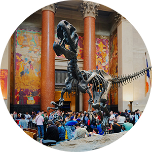
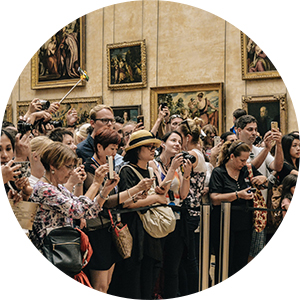
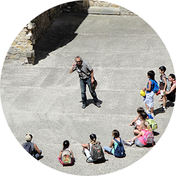
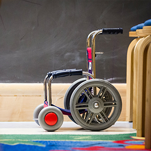
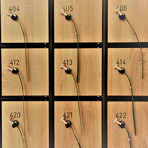
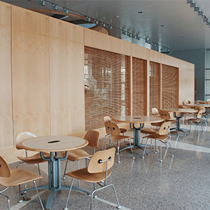

HOME>이용안내>관람도우미
관람도우미
전시해설
- 
- 
- 
- 운영시간 : 오전 11시, 오후 2시, 오후 4시(주말에만 추가운영)
- 소요시간 : 한시간 가량 소요
- 전시설명을 듣기 원하는 관람객께서는 정해진 시간에 1층 중앙홀 전시설명 대기장소에서 기다리시면 됩니다.
* 전시설명은 '개인관람객'에 한해 가능함.
지원서비스
- 
- 
- 
- 장애인, 노약자를 위한 보청기, 휠체어/유아(24개월미만)을 위한 유모차를 안내데스크에서 무료로 대여해 드립니다. (* 전동휠체어 미보유)
- 소지품과 여행용 가방 등은 물품보관함에 보관하실 수 있습니다.
- 간단한 음료와 간식을 판매하는 카페테리아 외에 도시락 등의 지참하신 음식물을 드실 수 있는 공간으로 3층 나무테라스(우천시 사용불가)와 지하 중층 80석 규모의 나무홀이 있습니다. (* 놀이방은 없습니다.)